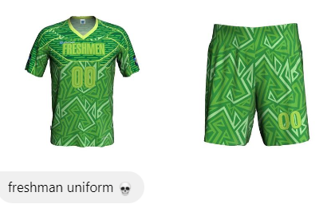

"Physically I am in hell week, mentally i'm in Intrams season"
With Intrams around the corner, Pisaynons are ecstatic and are looking forward to this month despite the unfathomable amount of requirements and the 2nd Quarter Exams.
One thing that everyone is anticipating in Intrams are the batch jerseys. Usually the jersey design is reveals a few days before the event. However, due to our middlemen, we are able to get leaked files of two batches' intrams jersey.
Batch 2027's jersey had some slight changes after its first release in the jersey voting. Its main jersey features a cat flying up to space with stars all around it. It was made by the hardworking members of the creatives team.
Their second jersey is still unknown. However, An anonymous jersey designer stated that it will feature a blue and white color scheme.
Batch 2029's leaked jersey, on the other hand, features a geometrical design with a green and light green color scheme.
Both batches' jerseys were met with generally positive reviews. Some people remarked 2027's starry and galactic look as a design idea that stood out of the other designs and 2029's geometric look as a simple yet elegant display.
NOTE: These are not the final jersey designs and are subject to change.